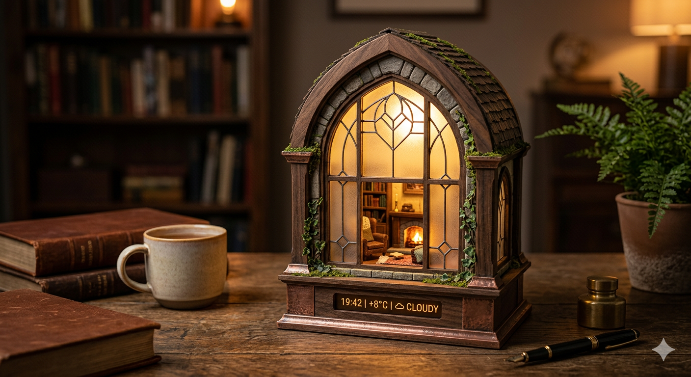

Fantasy Window Lamp
Lantern Window
Lantern Window transforms a desk object into a miniature portal. Framed in dark polished wood and frosted glass, the piece suggests an intimate interior life beyond the surface without revealing any character, preserving calm, mystery, and emotional stillness.
Warm golden light glows from within, creating depth through layered architecture and subtle interior staging. A discreet micro-display integrated into the base introduces time, weather, or ambient scene data, allowing the object to balance poetic atmosphere with contemporary utility.
Blending magical realism, storybook sensibility, and cinematic lighting, Lantern Window is intended as a refined home object rather than a toy or novelty prop. It works especially well on bookshelves, desks, and quiet reading corners.
- Material direction: Dark polished wood, frosted glass, warm illuminated interior
- Display idea: Time, weather, and subtle environmental motion
- Mood: Warm, quiet, mysterious, emotionally restorative